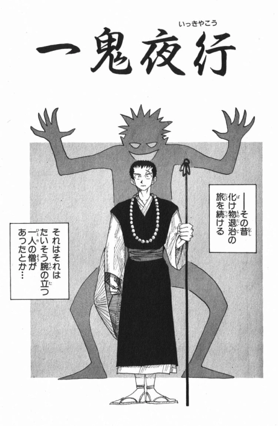

Eiichiro Oda
Nome em Japones: 尾田栄一郎
Nome Ocidental: Oda Eiichirō
Nascimento: 1 de janeiro de 1975 (48 anos)
Principal Obra: One Piece
Cônjuge: Chiaki Inaba (稲葉ちあき)
Biografia
Eiichiro Oda é um renomado artista de mangá japonês, conhecido mundialmente como criador da série One Piece. Com mais de 516 milhões de cópias em circulação em todo o mundo, a série se tornou o mangá mais vendido da história, bem como a série de quadrinhos mais vendida em volume, consagrando Oda como um dos autores de ficção mais vendidos da atualidade. Sua obra é tão influente que Oda foi nomeado como um dos artistas de mangá que mudou a história do mangá, o que atesta sua relevância para o meio.
Carreira
Eiichiro Oda decidiu que seria um artista de mangá aos quatro anos de idade, com o objetivo de evitar um “emprego de verdade”. Sua maior inspiração foi a série Dragon Ball, criada por Akira Toriyama. Além disso, sua fascinação por piratas foi influenciada pela animação de TV Vicky the Viking. Para iniciar sua carreira no mundo dos mangás, Oda criou um personagem chamado Pandaman, que foi enviado para o mangá clássico de luta livre Kinnikuman, de Yudetamago. Embora tenha aparecido apenas em um capítulo, Pandaman acabou se tornando um personagem recorrente nas obras de Oda
Com apenas 17 anos de idade, Oda entrou no mundo do mangá com o seu trabalho Wanted!, que conquistou diversos prêmios, incluindo o segundo lugar no prestigioso Prêmio Tezuka. Isso abriu portas para ele e o levou a conseguir um emprego na revista Weekly Shōnen Jump, onde inicialmente trabalhou como assistente de Shinobu Kaitani na série Suizan Police Gang. Mais tarde, mudou-se para Masaya Tokuhiro em Jungle King Tar-chan e Mizu no Tomodachi Kappaman, o que impactou significativamente o seu estilo artístico. Aos 19 anos, tornou-se assistente de Nobuhiro Watsuki em Rurouni Kenshin, antes de ganhar o Prêmio Hop Step para novos artistas de mangá.
No final de 1996, Oda criou duas histórias em um único capítulo com o tema de piratas, intituladas “Romance Dawn”, que foram publicadas em duas revistas diferentes: Akamaru Jump e Weekly Shonen Jump. Essas histórias apresentavam Monkey D. Luffy como protagonista, personagem que posteriormente se tornou o protagonista da série One Piece. Com esse trabalho inicial, Oda conquistou o público com o seu talento e habilidade de contar histórias empolgantes com um estilo artístico único.
Obras
Rurouni Kenshin (atuou como assistente)A série, ambientada nos primeiros anos da Era Meiji no Japão, conta a história de Kenshin Himura um pacífico espadachim que prometeu nunca mais matar. Entretanto, seu passado como retalhador a serviço da Ishin Shishi fará o jovem Himura brandir novamente sua espada contra velhos e novos inimigos. |
|
One Piece (1997 - atualmente)One Piece conta as aventuras de Monkey D. Luffy, um jovem cujo corpo ganhou as propriedades de borracha após ter comido uma fruta do diabo acidentalmente. Com sua tripulação, os Piratas do Chapéu de Palha, Luffy explora a Grand Line em busca do tesouro mais procurado do mundo, o "One Piece", a fim de se tornar o próximo Rei dos Piratas. |
|
Wanted! (1992)Um mangá curto baseado em um filme de faroeste. O pistoleiro Gil Buster, que é alvo de caçadores de recompensas por onde passa, supera as dificuldades com seu excepcional senso de armas e sagacidade. |
|
God's Present for the Future (1993)O personagem principal, Sri Blanc, decide lavar os pés do negócio de ladrões, mas acaba sendo roubado. O deus do céu, que escreve o destino dos humanos com a "caneta do destino", fica atordoado com tal figura de Bran e tenta infligir-lhe condenação. No entanto, quando Deus tentou reescrever o destino de "um meteorito cai sobre a família Bran", ele erroneamente disse que "um meteorito cai no galho". Se isso continuar, um meteorito cairá sobre a loja de departamentos "Branch". Para evitar isso, Deus diz ao próprio Bran que se ele salvar o povo no "galho" da crise dos meteoritos, ele eliminará a condenação de Bran. |
|
Ikki Yako (1993)O protagonista, o lorde rapado Tsuneshin, está em uma missão para encontrar seu mestre desaparecido, Tsuneshin. Durante suas viagens, ele é convidado a exterminar um monstro "canibal" que ameaça as pessoas em uma aldeia em que ele pára, e é forçado a aceitar a tarefa. |
 |
Monsters (1994)Ryuma, um samurai que sonha em lutar contra o espadachim mais forte "King", chega à cidade à beira de morrer depois de vagar e é resgatado por uma mulher chamada Flare. Lá, Ryuma está envolvido em um ataque de dragão. Ryuma descobre que o espadachim de primeira classe Cyrano e o espadachim de terceira categoria Diar chamaram repetidamente dragões para destruir a cidade e roubar o fogo. Ryuma mata instantaneamente Cyrano, que tentou silenciá-lo, e também o derrota sem ouvir o pedido de Dearl por sua vida. Em seguida, ele mata o dragão atacante com uma espada e deixa a cidade. Embora ele não soubesse, o Rei Espadachim era o próprio Ryuma, a quem foi dado o nome de "Ryuma de "King". |
|
Romance Dawn (1996)Este trabalho tornou-se o protótipo da obra-prima de Oda "ONE PIECE". A obra desenhada sob o título "ROMANCE DAWN" é "WANTED!" Existem duas obras, as obras incluídas (doravante referidas como "versão WJ") e a coleção "ONE PIECE RED" (doravante referida como a "versão SS"). O título "ROMANCE DAWN" também é usado como subtítulo para os episódios 2 e 1 de "ONE PIECE". |
|
Dragon Ball X One Piece: Cross Epoch (2006)Dragon Ball x One Piece: Cross Epoch (クロス エポック?) é um mangá one-shot escrito e ilustrado por Akira Toriyama e Eiichiro Oda, onde fazem um crossover entre suas respectivas séries: Dragon Ball e One Piece. Foi publicado em dezembro de 2006 na revista Weekly Shōnen Jump. |
|
One Piece x Toriko (2011)One Piece x Toriko: A Verdadeira Comida! Fruta do Diabo!! é o segundo trabalho colaborativo entre Eiichiro Oda e Mitsutoshi Shimabukuro. Ele apresenta os Piratas do Chapéu de Palha com personagens do mangá, Toriko. Foi publicado junto com o Capítulo 619. |
Premiações
- "FLY UP BOY" é finalista do 69º Prêmio Hop☆Step
- 1992 - "WANTED!" Semifinalista do 44º Prêmio Tezuka
- 1993 - "Ichiki Yagyo" ganhou o 104º Hop Step Award
- 2000 - "ONE PIECE" 4º Prêmio Cultural Tezuka Osamu Finalista 6º lugar
- 2001 - "ONE PIECE" 5º Prêmio Cultural Osamu Tezuka Finalista 6º lugar
- 2002 - "ONE PIECE" 6º Prêmio Cultural Osamu Tezuka Finalista 6º lugar
- 2006 - "ONE PIECE" selecionou a Japan Media Arts 100 Manga Division
- 2012 -"ONE PIECE" ganhou o Grande Prêmio do 41º Japan Cartoonists Association Award
- 2018 -Prêmio de Honra ao Cidadão da Prefeitura de Kumamoto
- 2019 -Prêmio Categoria Escritor do Yahoo! Search Awards
- 2023 -18º Prêmio Watanabe Susumu,42º Prêmio Especial Fujimoto